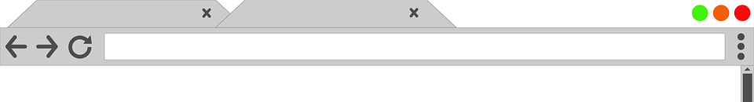

The History API is the way browsers let you:
SPA
1 HTML-document
many Views
the same URL (Address Bar)
Fragmented URL — url with hash # signs
URL example:
https://dom.spec.whatwg.org/
Fragmented URL example:
https://dom.spec.whatwg.org/#nodelist
Fragment ID:
#nodelist
window object’s hash property exists window.location.hash
window.history || history
History object is unique for each browser tab
Go back to the previous page:
history.back()Forward to the next page:
history.forward()Navigate back or forward multiple levels deep:
history.go(-1) //equivalent to history.back()
history.go(-2) //equivalent to calling history.back() twice
history.go(1) //equivalent to history.forward()
history.go(3) //equivalent to calling history.forward() 3 times
Check how many entries there are in the history:
history.lengthhistory.pushState()
Accepts 3 parameters
Limitations:
- size limit 640Kb
- the object needs to be serializable
Example:
// URL: https://example.com
const state = { name: 'Flavio' }
history.pushState(state, '', '/user') // https://example.com/users
history.replaceState()
Example:
history.pushState({}, '', '/posts')
const state = { post: 'first' }
history.pushState(state, '', '/post/first')
const state = { post: 'second' }
history.replaceState(state, '', '/post/second')
history.back() // /posts
history.state
const state = { post: 'first' }
history.pushState(state, '', '/post/first')
history.state // { post: 'first' }
Neither history.pushState() nor history.replaceState() won’t change the content of the page, and will not cause any browser action.
window.onpopstate = event => {
console.log(event.state)
}
const state = { post: 'first' }
history.pushState(state, '', '/post/first')
// { post: 'first' }
const state = { post: 'second' }
history.replaceState(state, '', '/post/second')
// { post: 'second' }
The end